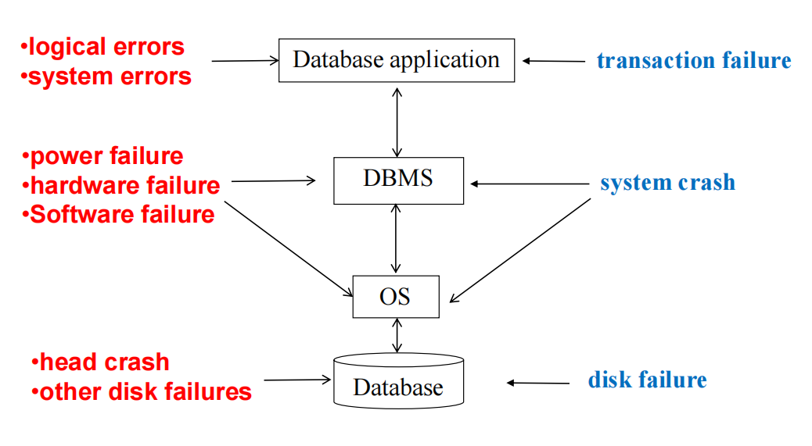
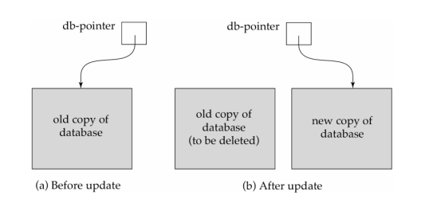
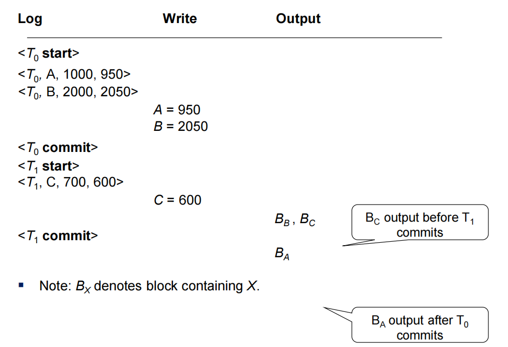
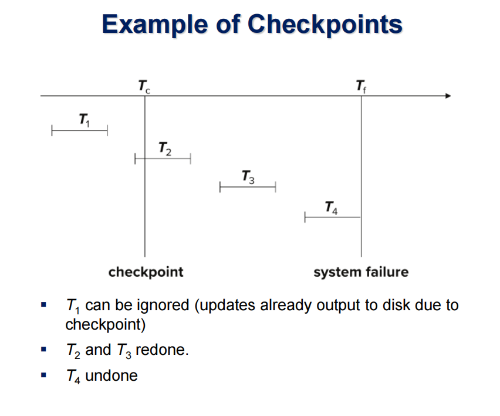
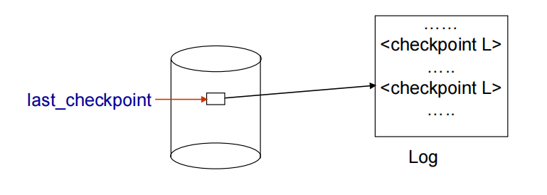
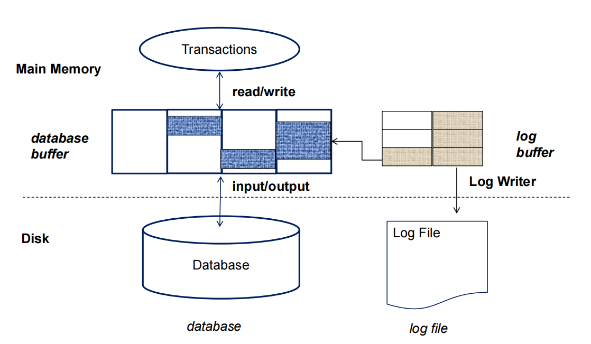
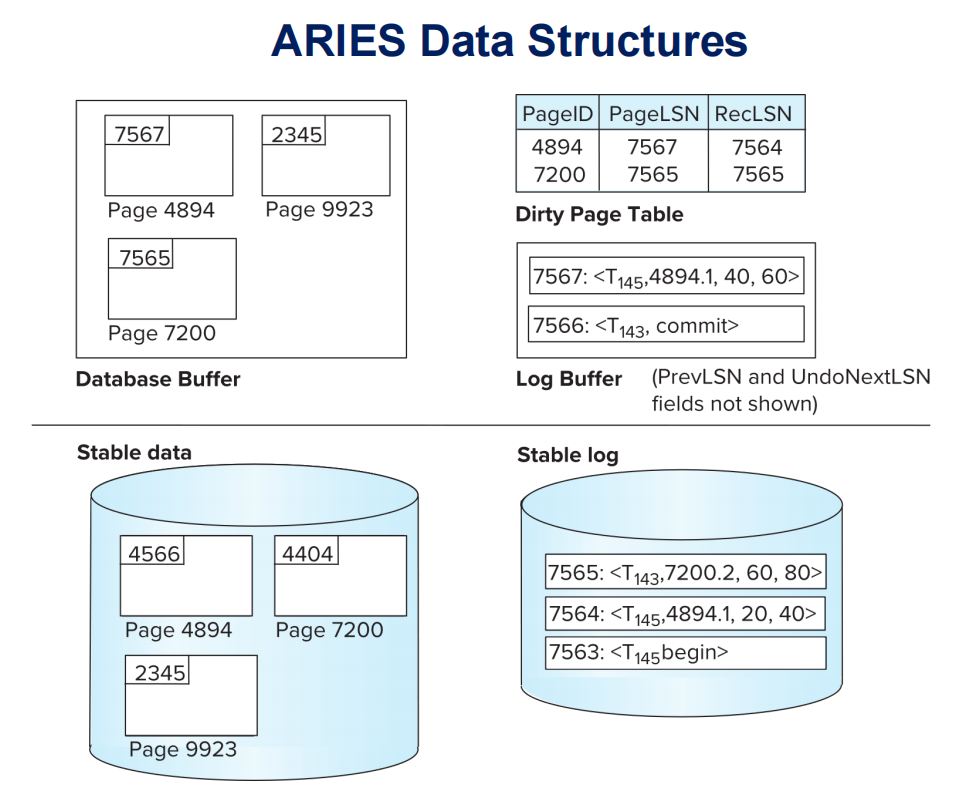
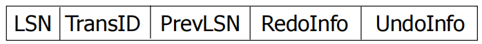
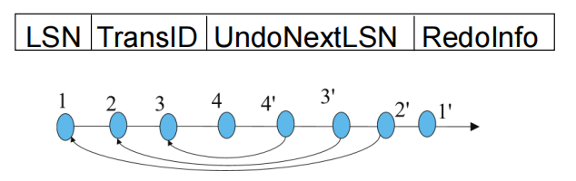
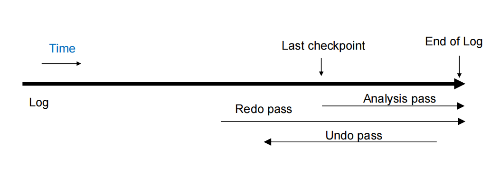

Lecture 15: Recovery System Notes
一、故障分类 (Failure Classification)
1. 故障类型

-
逻辑错误 (Logical Errors)（属于事务失败）
- 原因：事务因内部错误条件（如应用程序bug或数据不一致）无法完成。
- 示例：输入数据违反约束条件。
-
系统错误 (System Errors)（属于事务失败）
- 原因：数据库系统因错误状态（如死锁）终止活动事务。
- 示例：两个事务互相等待资源导致死锁。
-
系统崩溃 (System Crash)
- 原因：电源故障、硬件或软件失败导致系统崩溃。
- 假设：故障停止假说（Fail-stop assumption），即非易失性存储内容不会因崩溃而损坏。
- 保护措施：数据库系统有多个完整性检查防止磁盘数据损坏。
-
磁盘故障 (Disk Failure)
- 原因：磁头碰撞或其他磁盘故障破坏全部或部分磁盘存储。
- 检测：磁盘驱动器使用校验和（checksums）检测故障。
2. 故障影响
| 故障类型 | 影响 | 恢复措施 |
|---|---|---|
| 事务失败 | 事务未完成需回滚 | 使用日志撤销 |
| 系统崩溃 | 数据库需恢复一致状态 | 日志重做和撤销 |
| 磁盘故障 | 数据丢失需从备份恢复 | 备份+日志恢复 |
二、恢复和原子性 (Recovery and Atomicity)
1. 恢复算法的核心
恢复算法分为两部分：
-
正常事务处理期间的动作
- 记录足够信息（如日志），确保故障后可恢复。
- 示例：写日志记录到稳定存储。
-
故障后的恢复动作
- 将数据库恢复到一致状态，保证原子性、一致性和持久性。
- 示例：撤销未提交事务，重做已提交事务。
2. 原子性保证
- 问题：事务中途失败可能导致数据库不一致。比如，事务 \( T_i \) 从账户 A 转 50 美元到 B，若 A 已扣款但 B 未加款时崩溃。
- 解决方案：先将修改信息输出到稳定存储（如日志），再更新数据库。
- 替代方案：影子复制（Shadow-copy）和影子分页（Shadow-paging）。

三、基于日志的恢复 (Log-Based Recovery)
1. 日志基础
-
日志 (Log)
- 定义：记录数据库更新活动的序列，存储在稳定存储上。
- 特点：通过多份非易失性介质副本近似实现故障耐受。
- 修改的两种方法（请看后面）：立即数据库修改与延迟数据库修改。
-
日志记录类型
<T_i start>：事务 \( T_i \) 开始。<T_i, X, V_1, V_2>：事务 \( T_i \) 将数据项 \( X \) 从旧值 \( V_1 \) 更新为新值 \( V_2 \)。<T_i commit>：事务 \( T_i \) 提交。<T_i abort>：事务 \( T_i \) 中止。
2. 立即数据库修改 (Immediate Database Modification)
- 特点
- 未提交事务的更新可写入缓冲区或磁盘。
- 写前日志 (Write-Ahead Logging, WAL)：更新数据库前必须先写日志到稳定存储。
- 提交
- 当
<T_i commit>记录写入稳定存储时，事务提交。 - 更新块可在此前后写入磁盘，顺序灵活。
- 当
- 示例
输出操作表示数据块被写入磁盘，图中用 \(B_X\) 表示包含数据项 \(X\) 的块：

3. 延迟数据库修改 (Deferred Database Modification)
- 特点
- 仅在事务提交时更新缓冲区/磁盘。
- 优点：简化恢复。
- 缺点：需存储事务本地副本，增加开销。
4. 并发控制与恢复
- 共享资源：并发事务共享磁盘缓冲区和日志。
- 锁机制：
- 若 \( T_i \) 修改数据项，其他事务在 \( T_i \) 提交或中止前不可修改。
- 使用严格两阶段锁（Strict 2PL）确保更新对其它事务不可见。
- 日志交错：不同事务的日志记录可能交错存储。
5. 撤销与重做
- 撤销 (Undo)
- 操作：将数据项恢复到旧值 \( V_1 \)。
- 日志：记录补偿日志
<T_i, X, V_1>。 - 完成：写
<T_i abort>。
- 重做 (Redo)
- 操作：将数据项设置为新值 \( V_2 \)。
- 无需额外日志。
6. 故障恢复规则
| 日志状态 | 动作 |
|---|---|
有 <T_i start> 无 <T_i commit> 或 <T_i abort> |
撤销 \( T_i \) |
有 <T_i start> 和 <T_i commit> 或 <T_i abort> |
重做 \( T_i \) |
重复历史 (Repeating History)：重做包括恢复旧值的步骤，简化恢复但略显冗余。
四、检查点 (Checkpoints)
1. 检查点作用
- 减少恢复时间：无需从日志开头扫描，只有位于检查点中或在检查点后启动的事务需要重做或撤销。
- 定期记录：将缓冲区状态写入稳定存储。（在检查点前已提交或中止的事务，其所有更新都已输出到稳定存储中）
2. 检查点过程

-
模糊检查点 (Fuzzy Checkpoint)
- 暂时中止所有事务的更新操作
- 写入检查点日志记录，并强制将日志写入稳定存储
- 记录被修改缓冲区块列表
- 此时允许事务继续执行操作
- 将列表中所有被修改的缓冲区块输出至磁盘，在输出过程中禁止更新正在输出的块（遵循预写日志原则(WAL)）
-
将指向检查点记录的指针存储在磁盘固定位置
last_checkpoint中
-
使用模糊检查点恢复时，从
last_checkpoint指向的检查点记录开始扫描
-
ARIES 优化：后续详述。
五、缓冲区管理 (Buffer Management)
1. 缓冲区概念

- 脏页 (Dirty Page)：缓冲区中被修改但未写入磁盘的页面。
- 固定 (Pin)：锁定页面防止换出。
- 解除固定 (Unpin)：允许页面换出。
2. 写策略
数据库维护着一个数据块的内存缓冲区。当需要新数据块时，若缓冲区已满，则需从缓冲区移除现有数据块。若被移除的数据块已更新，则必须将其写入磁盘。
-
该恢复算法支持非强制策略：即事务提交时，已更新的数据块无需立即写入磁盘。（强制策略则要求在提交时必须写入更新数据块，这将导致更高的提交开销）
-
该恢复算法同时支持偷窃策略：即使包含未提交事务更新的数据块，也可在事务提交前写入磁盘。
| 策略 | 定义 | 影响 |
|---|---|---|
| 强制写 (Force) | 提交时强制所有更新写入磁盘 | 保证持久性但慢 |
| 偷写 (Steal) | 允许未提交更新写入磁盘 | 需撤销支持 |
六、早期锁释放和逻辑撤销操作 (Early Lock Release and Logical Undo Operations)
1. 早期锁释放
- 场景：如 B+ 树插入/删除，锁提前释放。
- 问题：物理撤销不可行，因其他事务可能已更新。
2. 逻辑撤销
-
逻辑撤销日志 (Logical Undo Logging)
- 记录撤销操作而非旧值。
- 示例：插入撤销为删除操作。
-
操作日志 (Operation Logging)
- 开始：
<T_j, O_j, operation-begin>。 - 执行：记录物理重做和撤销信息。
- 结束：
<T_j, O_j, operation-end, U>，\( U \) 为逻辑撤销信息。 - 示例：插入
(K5, RID7)到索引 I9：
- 开始：
-
恢复逻辑
- 未完成：使用物理撤销。
- 已完成：使用 \( U \) 逻辑撤销，忽略物理撤销。
3. 事务回滚
回滚步骤
- 逆向扫描日志。
- 物理撤销：
<T_i, X, V_1, V_2>-><T_i, X, V_1>。 - 逻辑撤销：
<T_i, O_j, operation-end, U>-> 执行 \( U \)，记录<T_i, O_j, operation-abort>。 - 跳过已撤销操作。
- 结束：
<T_i, abort>。
七、ARIES 恢复算法 (ARIES Recovery Algorithm)
1. ARIES 概述
- 特点：先进的恢复方法，优化正常处理和恢复。
- 关键技术
- 日志序列号 (LSN)：标识日志记录。
- 页面 LSN (PageLSN)：记录页面上最后应用的 LSN。
- 生理重做 (Physiological Redo)：页面物理标识，操作逻辑记录，减少日志开销。
2. ARIES 数据结构

- 脏页表 (Dirty Page Table)
- 记录缓冲区中被修改的页面。
- 字段：PageLSN（最后更新LSN），RecLSN（磁盘版本已应用的LSN）。
-
检查点日志
- 包含：脏页表、活动事务列表、每个事务的 LastLSN。
- 特点：不强制写脏页，低开销。
-
日志记录
-
结构：

-
补偿日志记录 (CLR)：记录恢复动作，无需撤销，含
UndoNextLSN，用于记录恢复期间执行且无需撤销的操作。
-
3. ARIES 恢复过程
三个阶段:
-
分析阶段 (Analysis Pass)
- 从最后检查点开始。
- 确定：需撤销的事务、脏页、RedoLSN（重做起点）。
-
重做阶段 (Redo Pass)
- 从 RedoLSN 开始重复历史。
- 条件：若页面不在脏页表或 LSN < RecLSN，跳过；否则重做。
-
撤销阶段 (Undo Pass)
- 逆向回滚未完成事务。
- 优化：跳过已撤销记录，使用 UndoNextLSN。

4. 其他特性
- 页面独立恢复：部分页面可单独从备份恢复。
- 保存点 (Savepoints)：支持部分回滚，如死锁处理。
- 细粒度锁：支持元组级索引锁，需逻辑撤销。
八、主存数据库恢复 (Recovery in Main Memory Databases)
优化
- 无需索引重做日志：内存重建快。
- 无需撤销日志：仅提交数据写磁盘。
- 并行恢复：快速加载和恢复。